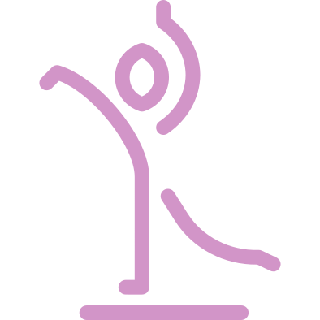
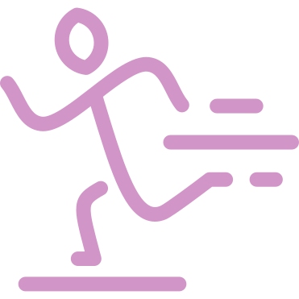

<h1 class="s-main-title">Classifier Training</h1>
<section class="c-training__movement-wrapper">
    <button class="c-training__movement-type"
            (click)="setMovementType(MovementTypeList.STANDING)"
            [ngClass]="{'is-active': movementType === MovementTypeList.STANDING}">
        
        <p class="c-training__movement-type-title">Standing</p>
    </button>
    <!-- /.c-training__movement-type -->
    <button class="c-training__movement-type"
            (click)="setMovementType(MovementTypeList.WALKING)"
            [ngClass]="{'is-active': movementType === MovementTypeList.WALKING}">
        
        <p class="c-training__movement-type-title">Walking</p>
    </button>
    <!-- /.c-training__movement-type -->
</section>
<!-- /.c-training__movement-wrapper -->
<p class="c-training__current-movement">Current movement:
    <span class="c-training__current-movement-type" *ngIf="movementType; else defaultMovement">{{ movementType }}</span>
    <ng-template #defaultMovement>{{ defaultMovementType }}</ng-template>
</p>
<section>
    <h2>Collect data</h2>
    <button (click)="captureMovement()">Capture movement</button>
    <button (click)="stop()">Stop</button>
    <button (click)="removeData()">Remove Data</button>
    <button (click)="send()">Save data to DB</button>
    <div>{{ ticks }}</div>
</section>
<section></section>

<button (click)="train()">Train network</button>

